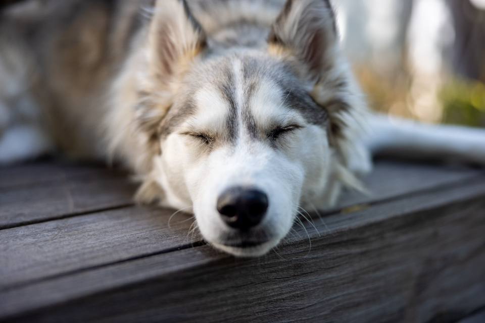

About
Our Story
Brad and Janet Harker's passion for animals drove them to establish Summit Farms Rescue over two decades ago. What started as a humble endeavor has evolved into a beacon of hope for countless dogs facing uncertain futures. At Summit Farms, every dog's journey is valued, and every life is cherished.

Our Mission
At Summit Farms Rescue, we're on a mission to make a difference—one dog at a time. Our commitment extends beyond simply finding homes for our furry friends. We strive to educate our community about responsible pet ownership, advocate for animal welfare, and create a culture of empathy and kindness towards all creatures.
Our Impact
Since our inception, Summit Farms Rescue has facilitated the adoption of over 2,620 dogs. But our impact goes beyond numbers. It's in the wag of a tail, the spark of joy in a dog's eyes, and the bond between a pet and their forever family. With each adoption, we're not just changing a dog's life; we're transforming entire families and communities.
Join Our Cause
Whether you're considering adoption, volunteering your time and skills, or making a donation to support our mission, there are countless ways to get involved with Summit Farms Rescue. Together, we can continue to be a voice for the voiceless and create a world where every dog is loved, cherished, and given the chance to thrive. Thank you for your interest in Summit Farms Rescue. Together, let's make a difference in the lives of dogs in need.